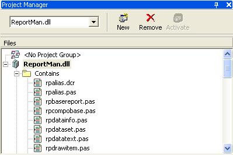

Download the .net components from sourceforge and unpack it to a directory:
http://sourceforge.net/projects/reportman
| Version | Packages | Description |
| Delphi 8 | Reportman.bdsproj | Report Manager Components |
| ReportmanDesign.bdsproj | Report Manager Design time installation for Delphi 8 |
Use Open option in File menu to open the project. It the package window is not visible then use Project Manager option in View menu.

Then right click in ReportMan.dll item and select Install option.
Install also ReportManDesign.bdsproj in the same way.
Now you can use in your VCL projects the VCLReport component in the component palette, this components are fully compatible with previous versions of Report Manager.
A sample (directory sample) is provided so you can test the functionality of the components after installation. Remember to place the path of report manager component library in your library path.
You can activate or deactivate any compilation features using rpconf.inc file. See compiling options.
Current limitations